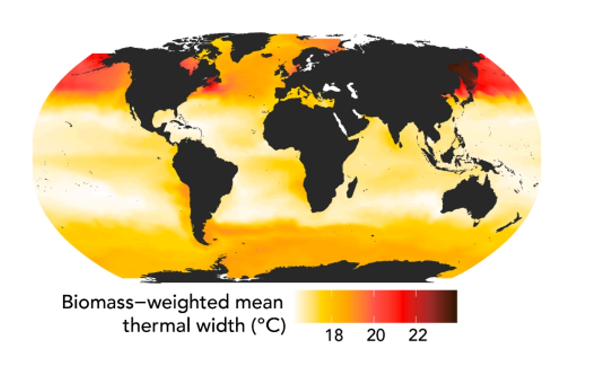
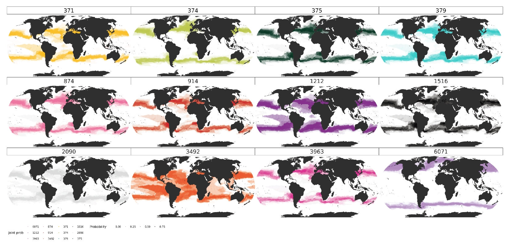

Computational Modeling of Marine Ecosystems: Phytoplankton Thermal Diversity Research
View PDF of Preprint Manuscript
My research at MIT explored how thermal diversity within marine phytoplankton species influences their global distribution and ecological niches through computational modeling approaches. The study focused on Gephyrocapsa huxleyi, a globally distributed coccolithophore species crucial for marine carbon cycling, using both experimental data and computational modeling approaches.
I was responsible for computational analysis in this project, utilizing MIT's Darwin ecosystem model to examine the implications of thermal trait diversity on phytoplankton distribution. The model resolved different phytoplankton types with varying thermal optima and niche widths, incorporating both "specialist" and "generalist" thermal strategies. The simulation revealed distinctive biogeographic patterns, with generalist strains dominating in temperate regions while specialists thrived in subtropical gyres. This distribution pattern was influenced by both temperature variability and local resource availability.

The study involved analyzing the model outputs by mapping the predicted global distributions of G. huxleyi strains. Using the thermal traits of each strain, including minimum and maximum temperatures for survival, we calculated probability distributions to determine where each strain could persist across global ocean regions. This analysis validated the model's prediction by showing that most strains had more than a 15% probability of existing near their original isolation locations. The results showed that no single strain could achieve an occurrence probability greater than 1% in all oceanic regions, indicating that the widespread distribution of the species depends on the combined effects of strains with different thermal traits.


A manuscript based on this work has been submitted to Ecology Letters, which has completed its second round of revisions. The research advances our understanding of how intraspecific diversity in thermal adaptation shapes species distribution patterns in changing ocean environments.